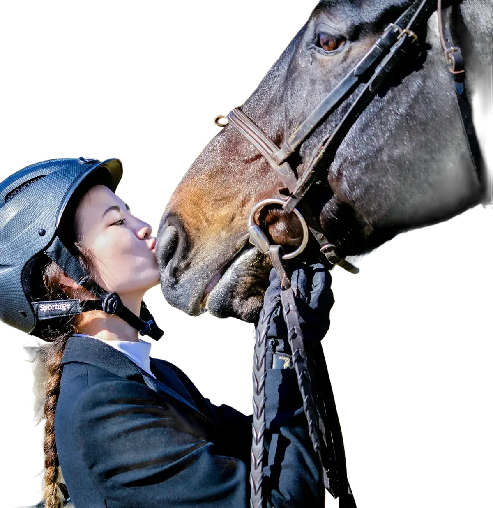
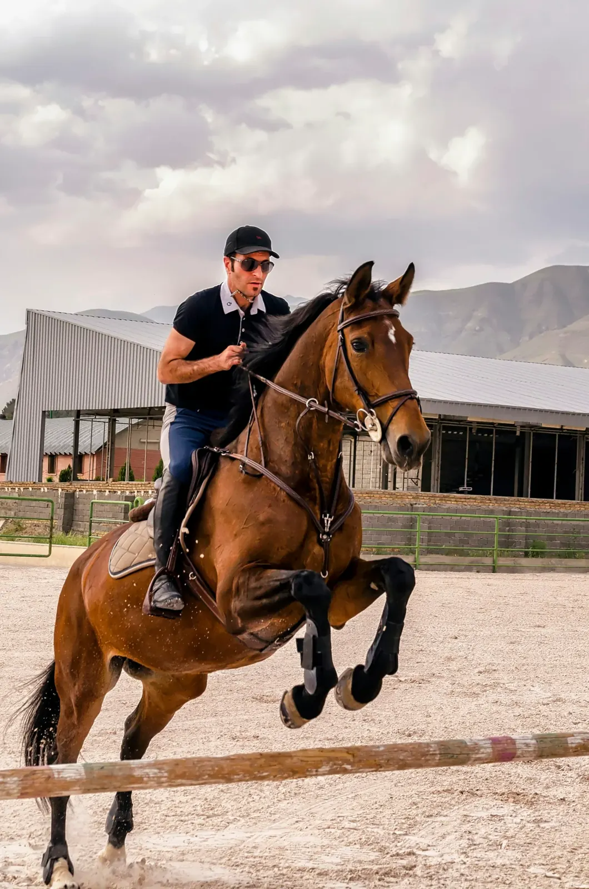
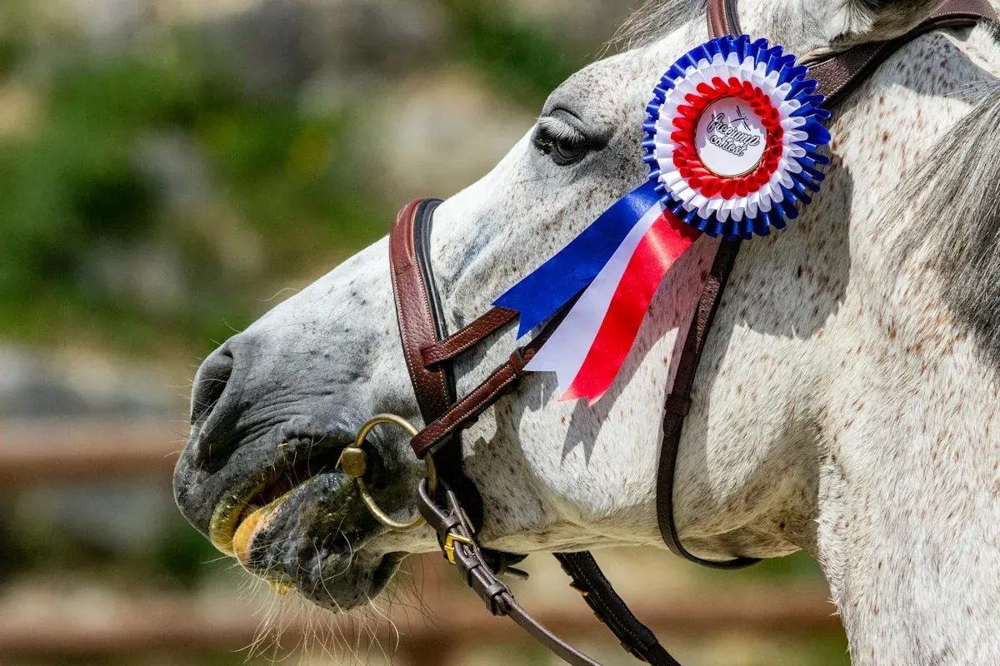
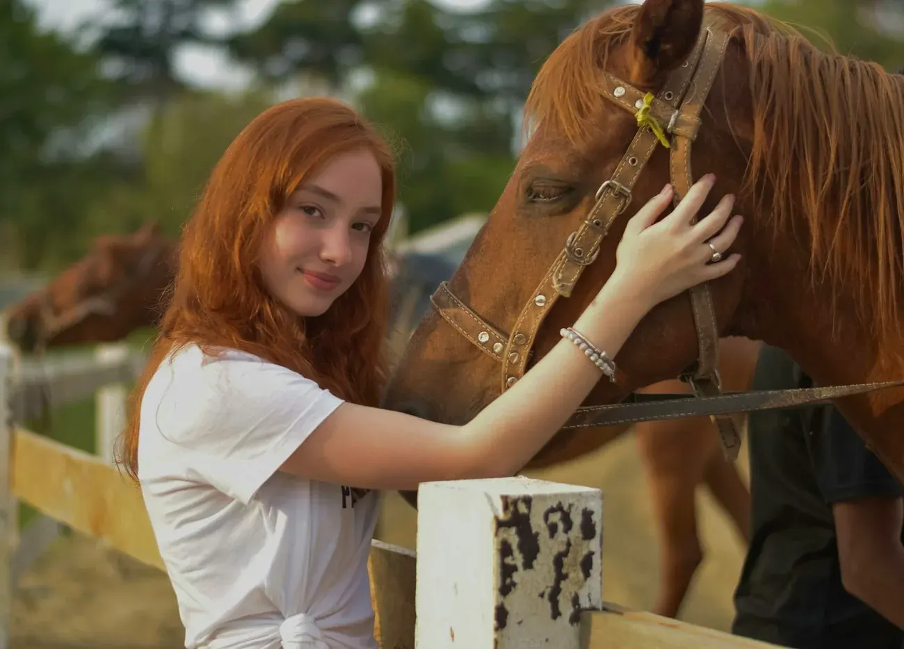
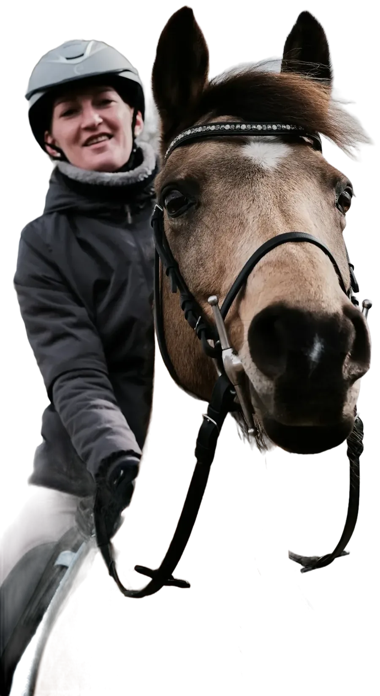
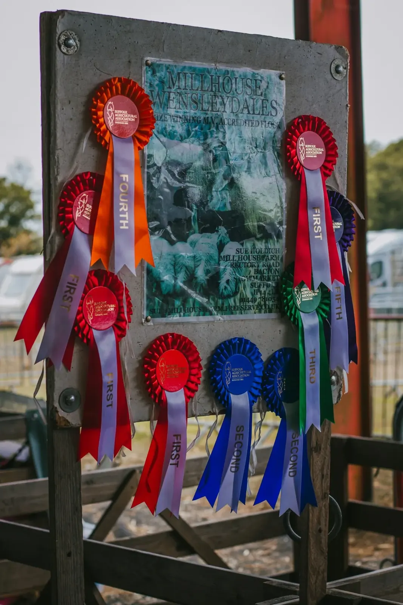

Bij elk weer
Bij elk weerBinnenpiste
Lessen gaan door, ook als het regent of koud is.
De Boomse Rij- en Jumpingclub op de Kleine Steylen. Veel paarden, een binnen- en buitenpiste en lesgeefsters die het graag uitleggen. Voor kinderen, jongeren en volwassenen.

Makkelijk bereikbaar, met plaats voor wie net begint en voor wie al jaren rijdt. En met een café waar je na de les nog blijft plakken.
Bij elk weerLessen gaan door, ook als het regent of koud is.

JumpingVoor de mooie dagen, met ruimte om te springen.
 Jong en oud
Jong en oudLeren rijden, en leren omgaan met paarden. Voor kinderen, jongeren en volwassenen.
 Gezellig
GezelligEen gezellige bruine kroeg en een terras. Ook als je gewoon iets komt drinken.
Zo verloopt het als je bij ons begint. Kies hieronder wie je bent, dan zie je wat je de eerste keer doet en wat je meebrengt.

Vertel wie wil rijden en hoeveel ervaring er al is. Dan krijg je de lesuren die passen.

Leren hoe je een paard benadert en verzorgt. Dat hoort er hier gewoon bij.
Met een lesgeefster die het rustig uitlegt, binnen of buiten.
In het café of op het terras, met de andere ruiters en hun ouders.



De Boomse Rij- en Jumpingclub Kleine Steile is al sinds 1969 een vzw. Een club waar paarden goed verzorgd worden, waar de jeugd mee mag helpen in de stal, en waar ouders hun kinderen met een gerust hart afzetten.
Na de les blijf je nog even hangen, in het café of op het terras. Zo ontstaan vriendschappen die verder gaan dan de piste.
Professionaliteit met warmte en humor in 'den bak', en gezelligheid troef in het café. Een vriendschappelijke sfeer en veel paarden.
Zeer lieve uitbaatster met een groot hart voor de dieren, en een nog groter hart voor de vele kinderen die hier les komen nemen.

Mijn dochter is zo goed bezig. Ze is blij en heeft hier veel vrienden gemaakt.
Hier kan je leren omgaan en rijden met paarden. Zowel binnen- als buitenpiste. Gezellige cafetaria en terras. Lieve uitbaters.
Gezellig, leerrijk en vriendelijke lesgeefsters. Veel paarden aanwezig en makkelijk bereikbaar.
De jeugd krijgt hier veel vrijheid om voor de paarden te zorgen en te genieten van het paardrijden.
Zeer fijne manege, vriendelijke mensen, gemoedelijke sfeer, goede lesgevers, lieve paardjes.

Bel voor de lesuren, een eerste kennismaking of al je vragen. Of kom gewoon eens langs voor een drankje.
03 888 36 14 Vraag naar Marina Van Aken